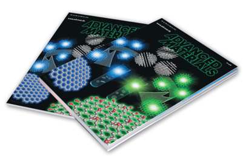
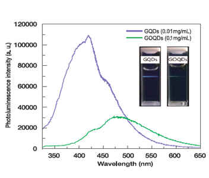
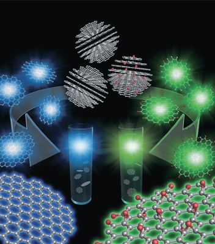

Report by Subjects
Report by Subjects
KAIST RESEARCH ACHIEVEMENTS
Development of Pristine Graphene Quantum Dots and graphene Oxide Quantum Dots: Origin of Blue and Green Luminescence
(Department of Chemical and Biomolecular Engineering) Tae Seok Seo ∙ (Department of Physics) Yong-Hoon Cho
Summary
Given that the need for eco-friendly, economical materials has been emphasized around the world, the development of a new light-emitting material is necessary so that it may serve as a replacement for Cd-based colloidal quantum dots, applications of which are limited due to their toxicity and difficult production processes. In this regard, the use of eco-friendly and cost-effective carbon-based 'graphene quantum dots' has rapidly increased, as these materials can be applied to a variety of optoelectronic devices for use in the biotechnology and medical fields.
R&D Report

Graphene quantum dots (GQDs) are the graphene sheets with lateral dimensions of less than 100 nm in a few layers which also exhibit visible color luminescence. Because GQDs, obtained from inexpensive graphite, are eco-friendly materials, their advantages offer new possibilities in various applications, such as optoelectronic devices, bio/optical sensors, bioimaging, and drug delivery systems, to name a few. However, most previous GQDs were fabricated by reducing oxygen functional groups on graphene oxide quantum dots (GOQDs), a process which requires the presence of oxygenous functional groups on the surface. For this reason, the luminescence of typical GQDs requires a combination of both a pure carbon structure and oxygenous functional groups, and how these residual defects affect the optical characteristics remains somewhat unclear. In addition, previous methods result in low levels of productivity due to their complex chemical processes. Hence, clarification of an accurate PL mechanism pertaining to pristine GQDs and the development of a simple means of fabricating GQDs are both necessary.
We developed highly homogeneous pristine GQDs and GOQDs using graphite nanoparticles (GNPs) in an effort to determine the luminescence origins of GQDs and GOQDs in the visible wavelength region. Pristine GQDs without oxygen defects were prepared by shaking GNPs in an ethanol and H2O mixture in a vortex mixer. In addition, to generate GOQDs from GNPs, we employed the 'modified Hummers method', which has been widely applied for the mass production of graphene oxide from graphite, resulting in GOQDs with a high ratio of oxygen defects.
 Pic 2. Photoluminescence spectra of GQDs
We demonstrate clear blue and green emissions of GQDs and GOQDs. By characterizing the optical properties, we found that the pristine GQDs had a significant absorption peak on the high-energy side. On the other hand, the GOQDs showed a broad absorption spectrum with a gradual change of up to 750 nm. Furthermore, the blue emission from the GQDs had a shorter recombination lifetime compared to that of the green emission from the GOQDs. These differences between the GQDs and GOQDs could be explained by the absence or presence of oxygen defects.
Conclusion
 Pic 3. Synthetic scheme for GQDs and GOQDs using chemical exfoliation of GNPs(oxygen sites are shown as red dots)
In conclusion, we have revealed that the green luminescence of GOQDs originates from defect states with oxygenous functional groups, whereas the blue luminescence of GQDs is dominated by intrinsic states in the high-crystalline structure.
Expectation Effectiveness
Our research developed highly homogeneous pristine GQDs and GOQDs using graphite nanoparticles and determined the luminescence origins of the GQDs in the visible region. These pristine GQDs and GOQDs with high yields and good reproducibility can be used in various applications. Specifically, graphene-based quantum dots offer various advantages, including low cytotoxicity, excellent solubility, chemical inertness, stable photoluminescence, and enhanced surface grafting capabilities, all of which highlight their potential for use in bio-sensor, bio-imaging, and photovoltaic applications.
Research Funding
ㆍThis work was supported by the Converging Technology Project funded by the Korean Ministry of Environment (M112-00061-0002-0) and by the GRC project of KI for the Nano Century.
Research Results
ㆍBack Cover in Advanced Materials July, 19th
ㆍMedia report (The Science, Herald Corp., Newsis, ZDNet Korea, News 1 Korea, Newstown, Yonhap News, Aj News)
ㆍ(Poster) Nano Korea 2013, The 11th International Nanotech Symposium, July 12th, 2013
ㆍ(Oral) The Korean Physical Society, November 1st, 2013